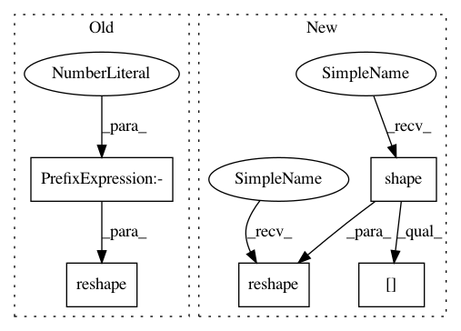

f01a7761d70d727ef4ea42c05464c2f85679ecd1,gpflow/kernels/base.py,Kernel,slice_cov,#Kernel#Any#,79
Before Change
N = cov.shape[0]
I = len(act_dims)
cov_reshaped = tf.reshape(cov, (-1, cov.shape[-1], cov.shape[-1]))
return tf.reshape(cov_reshaped[..., act_dims, act_dims], (N, I, I))
@abc.abstractmethod
def K(self, X, Y=None, presliced=False):
pass
After Change
nlast = cov.shape[-1]
ndims = len(dims)
cov_shape = tf.shape(cov)
cov_reshaped = tf.reshape(cov, [-1, nlast, nlast])
gather1 = tf.gather(tf.transpose(cov_reshaped, [2, 1, 0]), dims)
gather2 = tf.gather(tf.transpose(gather1, [1, 0, 2]), dims)
cov = tf.reshape(tf.transpose(gather2, [2, 0, 1]),
tf.concat([cov_shape[:-2], [ndims, ndims]], 0))
// nbatch = cov.shape[0]
// cov_reshaped = tf.reshape(cov, (-1, nlast, nlast))
// return tf.reshape(cov_reshaped[..., dims, dims], (nbatch, ndims, ndims))
In pattern: SUPERPATTERN
Frequency: 3
Non-data size: 5
Instances
Project Name: GPflow/GPflow
Commit Name: f01a7761d70d727ef4ea42c05464c2f85679ecd1
Time: 2018-12-27
Author: art.art.v@gmail.com
File Name: gpflow/kernels/base.py
Class Name: Kernel
Method Name: slice_cov
Project Name: GPflow/GPflow
Commit Name: f746253f6d61780397e0aebd997f0f1b5db17ed6
Time: 2018-07-17
Author: dutordoirv@gmail.com
File Name: gpflow/quadrature.py
Class Name:
Method Name: ndiag_mc
Project Name: deepmind/sonnet
Commit Name: e164c3574da160fb72fc962947a783fa299424e3
Time: 2019-07-07
Author: tomhennigan@google.com
File Name: sonnet/src/batch_apply.py
Class Name:
Method Name: merge_leading_dims